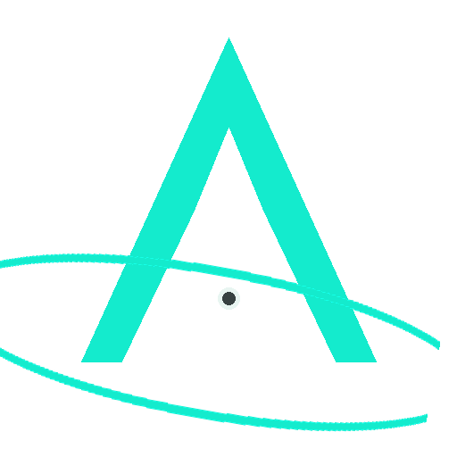

Architecture & Bench
Flight software, sensor fusion, hardware interrupts and pipeline modularization.

ASTREA SSPASTREA SOLO SPACE PROGRAM / GERMANY
ASTREA is a solo space program focused on building, testing and documenting aerospace systems and astrophysics software.
ASTREA Solo Space Program brings physical flight hardware and scientific computation together under one long-term development effort. ICARUS-RLV addresses autonomous flight systems. JOANUS addresses computational astrophysics and exoplanet detection.
01 - FLIGHT SYSTEMS
Autonomous stratospheric reentry vehicle hardware testbed for guidance, navigation, control and recovery.
02 - ASTROPHYSICS
A headless exoplanet discovery and validation pipeline built around relative photometry, BLS period searches and automated false-positive checks.
Flight software, sensor fusion, hardware interrupts and pipeline modularization.
Controlled 1,000 m drops to validate flight state machines, grid fins and recovery.
Targeting up to approximately 35 km with the full science payload.
Targeting approximately 40 km and ultra-thin atmospheric conditions.
ASTREA started as a way to build something real, document the engineering journey and create a body of serious technical work for the next stages of my education. The long-term direction is aerospace engineering and, eventually, the possibility of applying to the European Space Agency.
And, honestly: because building rockets and hunting exoplanets is fucking cool. XD
ASTREA SSP